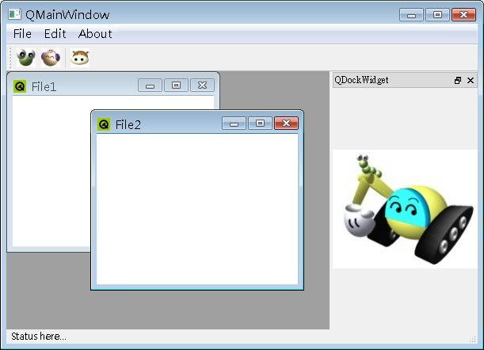

在 QMainWindow 中所示範的是SDI（Single Document Interface）視窗介面，每個開啟的文件佔據一個視窗，SDI介面主要適用所有工作都在同一個文件中進行的情況。
有的視窗程式會使用MDI（Multiple Document Interface）介面，每個開啟的文件都在同一個視窗之中成為一個子視窗，MDI主要適用於完成一個工作，需要從多個文件來組合的情況，例如影像處理 軟體多使用MDI介面，因為影像合成通常需要多個影像文件來組合。
在Qt中要製作MDI介面的視窗，是使用 QMainWindow，並將其中心元件（Central Widget）設為QMdiArea實例，而每一個MDI子視窗，則使用QMdiArea的addSubWindow()來加入。
下面這個程式以 QMainWindow 中的程式為基礎，使用QMdiArea修改為MDI介面，當中會有兩個MDI子視窗：
#include <QApplication>
#include <QMdiArea>
#include <QMainWindow>
#include <QTextEdit>
#include <QMenuBar>
#include <QAction>
#include <QToolBar>
#include <QStatusBar>
#include <QDockWidget>
#include <QLabel>
#include <QPixmap>
int main(int argc, char *argv[]) {
QApplication app(argc, argv);
QMainWindow *mainWindow = new QMainWindow;
mainWindow->setWindowTitle("QMainWindow");
QMdiArea *mdiArea = new QMdiArea;
mainWindow->setCentralWidget(mdiArea);
// 文字編輯區
QTextEdit *textEdit = new QTextEdit;
textEdit->setWindowTitle("File1");
mdiArea->addSubWindow(textEdit);
textEdit = new QTextEdit;
textEdit->setWindowTitle("File2");
mdiArea->addSubWindow(textEdit);
// 蹦現選單
// 餘下程式相同....
return app.exec();
}下圖為執行時的參考畫面：
